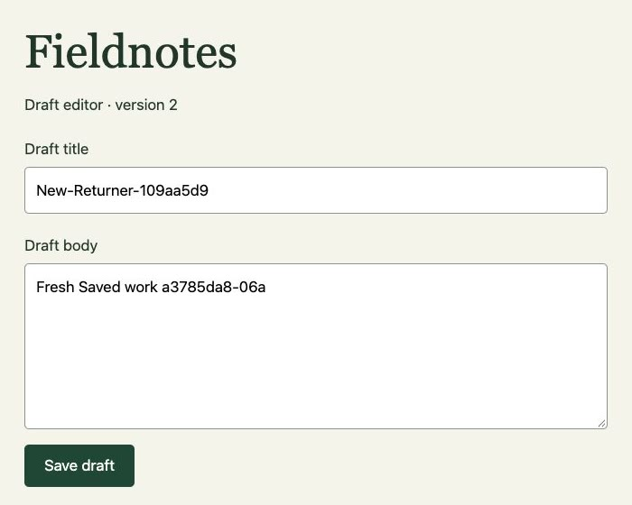
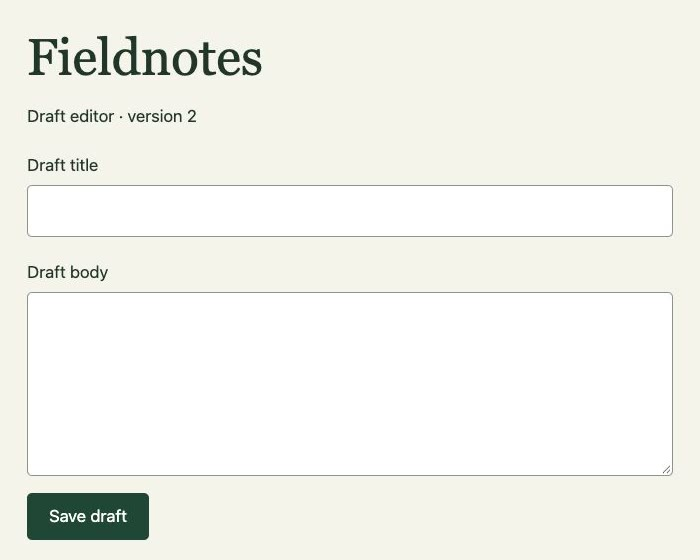

Returner · built with Kane CLI
Returner
Release checks for the people who come back.
Real Chrome · coding-agent repair ·
fexx301.github.io/returner
New user
PASS

Returning user
FAIL

Same release. Yesterday's draft is gone.